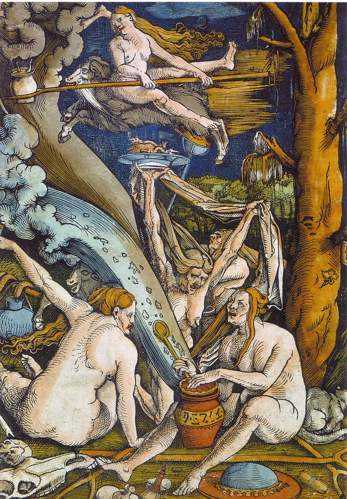
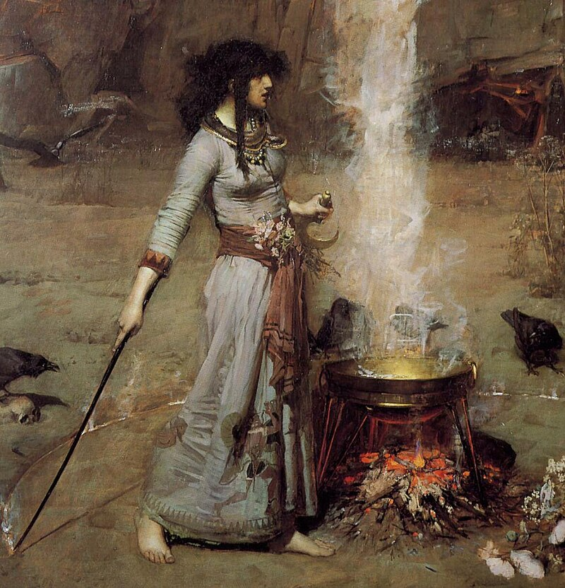

Witchcraft has a wide range of meanings in anthropological, folkloric, mythological, and religious contexts. Historically and traditionally, the term "witchcraft" has meant the use of magic or supernatural powers to cause harm and misfortune to others. A witch (from Old English wicce f. / wicca m.) is a practitioner of witchcraft. According to Encyclopedia Britannica, "Witchcraft thus defined exists more in the imagination of contemporaries than in any objective reality. Yet this stereotype has a long history and has constituted for many cultures a viable explanation of evil in the world." The belief in witchcraft has been found in a great number of societies worldwide. Anthropologists have applied the English term "witchcraft" to similar beliefs in occult practices in many different cultures, and societies that have adopted the English language have often internalised the term.

The concept of witchcraft and the belief in its existence have persisted throughout recorded history. The concept of malevolent magic has been found among cultures worldwide, and it is prominent in some cultures today. Most societies have believed in, and feared, an ability by some individuals to cause supernatural harm and misfortune to others. This may come from mankind's tendency "to want to assign occurrences of remarkable good or bad luck to agency, either human or superhuman".

The historical and traditional definition of "witchcraft" is the use of black magic (maleficium) or supernatural powers to cause harm and misfortune to others. Where belief in harmful magic exists, it is typically forbidden by law as well as hated and feared by the general populace, while helpful magic is tolerated or even accepted wholesale by the people, even if the orthodox establishment opposes it. It is commonly believed that witches use objects, words and gestures to cause supernatural harm, or that they simply have an innate power to do so. Hutton notes that both kinds of witches are often believed to exist in the same culture. He says that the two often overlap, in that someone with an inborn power could wield that power through material objects. In his 1937 study of Azande witchcraft beliefs, E. E. Evans-Pritchard reserved the term "witchcraft" for the actions of those who inflict harm by their inborn power, and used "sorcery" for those who needed tools to do so. Historians found it difficult to apply to European witchcraft, where witches were believed to use physical techniques, as well as some who were believed to cause harm by thought alone. This distinction "has now largely been abandoned, although some anthropologists still sometimes find it relevant to the particular societies with which they are concerned". While most cultures believe witchcraft to be something willful, some Indigenous peoples in Africa and Melanesia believe witches have a substance or an evil spirit in their bodies that drives them to do harm. Witches are commonly believed to cast curses; a spell or set of magical words and gestures intended to inflict supernatural harm.[40] As well as repeating words and gestures, cursing could involve inscribing runes or sigils on an object to give that object magical powers; burning or binding a wax or clay image (a poppet) of a person to affect them magically; or using herbs, animal parts and other substances to make potions or poisons. A common belief in cultures worldwide is that witches tend to use something from their victim's body to work black magic against them; for example hair, nail clippings, clothing, or bodily waste. Such beliefs are found in Europe, Africa, South Asia, Polynesia, Melanesia, and North America. Another widespread belief among Indigenous peoples in Africa and North America is that witches cause harm by introducing cursed magical objects into their victim's body; such as small bones or ashes. In some cultures, malevolent witches are believed to use human body parts in magic, and they are commonly believed to murder children for this purpose. In Europe, "cases in which women did undoubtedly kill their children, because of what today would be called postpartum psychosis, were often interpreted as yielding to diabolical temptation". Witches are believed to work in secret, sometimes alone and sometimes with other witches. Hutton writes: "Across most of the world, witches have been thought to gather at night, when normal humans are inactive, and also at their most vulnerable in sleep". In most cultures, witches at these gatherings are thought to transgress social norms by engaging in cannibalism, incest and open nudity. Another widespread belief is that witches have a demonic helper or "familiar", often in animal form. Witches are also often thought to be able to shapeshift into animals themselves. Witchcraft has been blamed for many kinds of misfortune. In Europe, by far the most common kind of harm attributed to witchcraft was illness or death suffered by adults, their children, or their animals. "Certain ailments, like impotence in men, infertility in women, and lack of milk in cows, were particularly associated with witchcraft". Illnesses that were poorly understood were more likely to be blamed on witchcraft. Edward Bever writes: "Witchcraft was particularly likely to be suspected when a disease came on unusually swiftly, lingered unusually long, could not be diagnosed clearly, or presented some other unusual symptoms". Necromancy is the practice of conjuring the spirits of the dead for divination or prophecy, although the term has also been applied to raising the dead for other purposes. The biblical Witch of Endor performed it (1 Samuel 28th chapter), and it is among the witchcraft practices condemned by Ælfric of Eynsham: "Witches still go to cross-roads and to heathen burials with their delusive magic and call to the devil; and he comes to them in the likeness of the man that is buried there, as if he arises from death."